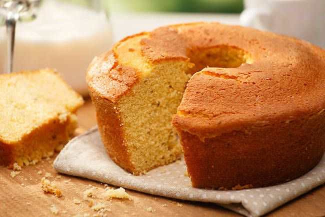

Canjica
A canjica, também chamada de mingau de milho branco ou curau, é um prato popular feito com leite comum ou leite de coco, milho branco ou verde ralado e açúcar.
Bolo de milho
O bolo de milho não pode faltar no cardápio de festa junina. Ele é macio, saboroso e deixa qualquer um com água na boca.
Pamonha
A pamonha se destaca como um dos pratos mais famosos da festa junina. O seu principal ingrediente é o milho.
Cocada
Com diversos sabores, a cocada é um doce de festa junina, feito com coco ralado, ovos, leite de coco, rapadura e leite condensado. Para deixá-la diferente, durante a preparação, pode-se acrescentar polpa de frutas.
Pé-de-moleque
O pé-de-moleque é um doce típico da culinária brasileira, que se originou no século XVI, a partir do cultivo da cana-de-açúcar. A princípio, ele era preparado com rapadura. No entanto, hoje em dia ele usa açúcar como base.
Quentão
Essa bebida típica mantém o corpo aquecido e aumenta a alegria dos convidados.